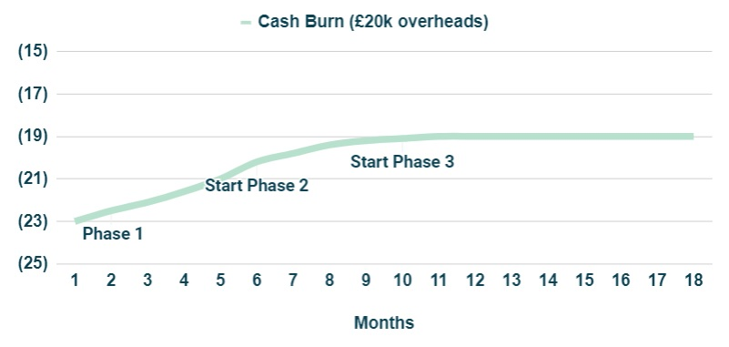
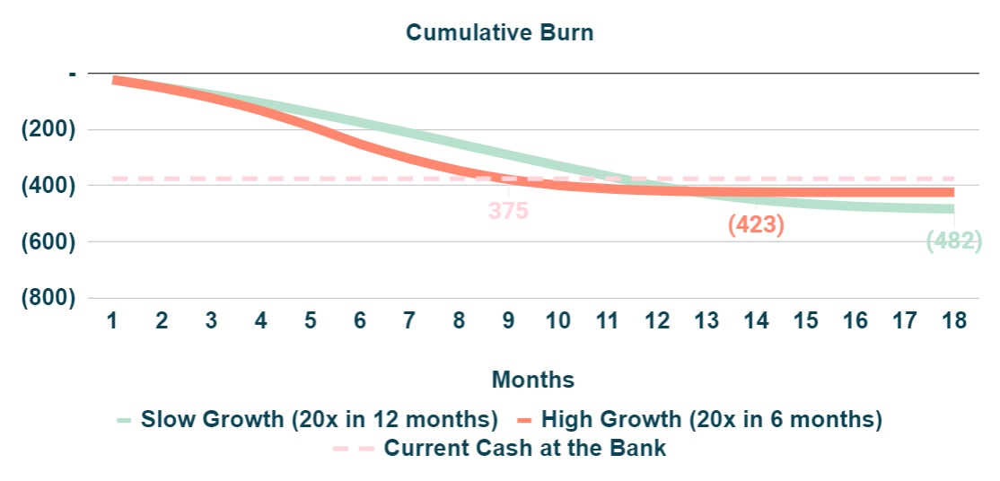

Too long; Didn't read. The moment in time when a company runs out of cash (runway) is determined by two key levers - Contribution Margin (CM) and Overheads. Extending the runway can be achieved through a combination of lower growth (positive impact in CM in the short term) and a reduction of Overheads.
Runway > Run out of Cash
Runway is defined as how long can a Company operate until it runs out of cash and is usually expressed in months. The implied assumption is that Cashflows, i.e. the difference between revenues and costs, are negative and therefore operations are being funded by cash at the bank, the source of which was likely an equity raise in the past.
Figure 1: Cashflows.For example if a company has £1.2m of cash and is burning £100k per month its runway is 12 months.
Cashflows > Contribution Margin (CM) plus Overheads
In order to link Cashflows with the operations of a Company, in a way that non-finance people can relate to in their day to day activities, it is very helpful to break it down in a slightly different way: Contribution Margin and Overheads.
Figure 2: Cashflows = CM + Overheads.Contribution Margin (CM) is calculated as revenues net of CM costs. These are costs that a corporation needs to incur in order to generate revenues, so they grow in line with sales. It can either be a cash inflow (if positive when revenues cover CM costs) or cash outflow (if negative).
Overheads (Ovh) are all other cash outs that the Company pays, regardless of the revenues generated. Over time, its growth should decouple from sales.
Contribution Margin Over Time
There are typically be three phases for CM in a high growth startup:
- Phase #1 - because it takes some time for revenues to ramp up while costs start to be incurred from day one (e.g hire a sales team - salaries are paid day one but revenues may only start to be generated in month six), CM is initially negative and progressively trends towards zero. Cash burn (CM+Overheads) is at its maximum in this phase.
- Phase #2 - revenues keep ramping up and CM becomes increasingly positive. Cash burn reduces.
- Phase #3 - revenues cannot increase any longer without increasing further CM costs, as a consequence CM plateaus. Cash burn is minimised.
To illustrate this, let’s consider a hypothetical Company that has just one sales person. The salary of that person is always (£1k) per month and there are some one-offs between (£1-2k) each month for the first 4-6 months. Given the way this specific industry works, it takes 6 months to generate sales and on a run-rate basis the Agent can generate £2k of sales per month.
Figure 3: Contribution Margin Phases #1/#2/#3.- Phase #1 - CM starts at (£3k) and as one-off costs elapse and revenues start to ramp it takes c. 6 months to achieve CM=0.
- Phase #2 - From month 6 onwards, revenues keep ramping up and by month ~11 the agent is now generating £2k of revenues per month. CM increases towards £1k.
- Phase #3 - From month 11 onwards, the agent is not able to bring in more revenues, CM is now at its run-rate level of £1k per month (£2k revenues net of £1k salary).
In the figure below it is shown an example for the overall cash burn assuming (£20k) of overheads. At the start of Phase 1 burn is at its maximum (£23k), reduces to (£20k) in Phase 2 and finally plateaus at (£19k) in Phase 3. It is important to notice that a run-rate CM of £1k is not sufficient to cover (£20k) of Overheads. Further growth (or Overheads reduction) is necessary for the Company to hit breakeven.
 Figure 4: Cash burn as CM goes through Phases #1/#2/#3.Investing For Growth > Maximum Investment and Payback Period
While CM is negative, the Company needs to fund the cash outflow from cash at the bank. The time period required to hit CM=0 will determine what is the maximum investment necessary to grow the business - in this case it was £10k at month 7.
Figure 5: Total Investment and Payback period.Another important parameter is how long it takes to recover the initial investment, ie the payback period. Given that the run-rate CM is £1k it should take another ~10 months to fully recover the £10k investment, so overall, there is cash “tied-up” to grow the business for ~18 months. This is what it means to invest for growth - the higher the growth, the more cash will be necessary to fund the incremental burn due to the negative CM period.
What is required to achieve breakeven?
If Overheads are (£20k) and run-rate CM is £1k, the Company needs to grow CM to £20k and hire in total 20 Agents. The maximum investment per Agent is £10k, hence the total funding required should be less than £200k (20x£10k). If it takes ~18 months to fully recover the investment, up to ~£350k (18x£20k) would be required to cover Overheads for this period. So overall, the total funding required to achieve positive cash flows should be less than £550k (£350k+£200k). This amount can then be compared with the current cash position at the bank. For example if cash available was £240k, runway would be less than 12 months (£240k / £20k Overheads) and therefore it would not have enough time to hit breakeven.
How does growth impact the runway?
Lets consider the cumulative cash burn for two scenarios, where the Company has £375k cash at the bank.
- Scenario #1 (slow growth)- hire 20 Agents in 12 months @ 1-2 per month
- Scenario #2 (high growth) - hire 20 Agents in 6 months @ 1-5 per month
The first conclusion is that growth increases burn in the short term (red line is to the left of the green line) and reduces the funding requirements in the long term (£423k vs £482k). However, because of this increase in burn, another consequence is that the runway will be shortened - in the high growth scenario this is ~9mths vs ~12 months in the slow growth scenario.
How to think about runway vs capital markets conditions?
In normal capital markets conditions, where there is plenty of money from investors, startups will typically go for higher growth (if they can…) because there is little risk of not being able to raise additional money in the future to extend the runway. In capital market conditions like those experienced from mid 2022, where access to new money is likely to be constrained for a significant time period, it is wise to extend the runway as much as possible. This can be achieved through a combination of lower growth (positive impact in CM in the short term) and a reduction of Overheads as per the example below (red line = hire 20 Agents in 15 months and reduce Overheads by 25%).
 Figure 7: Impact of growth and Overheads in runway.